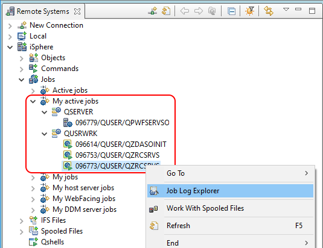
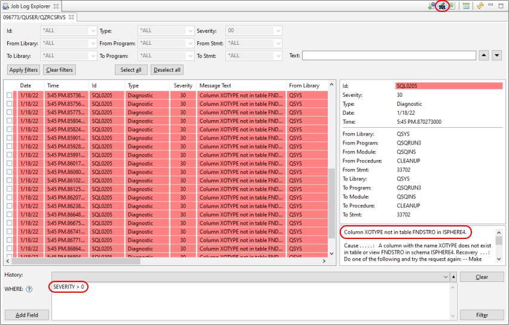

Sometimes it is not quit clear, what the problem is, e.g. you start an iSphere Source File search and nothing obvious happens:
In that case you should check the iSphere server jobs, because it might be a problem with the iSphere library. Use the Job Log Explorer option to check the job log of each server job for errors:

Use the SQL filter option to exclude information messages with a severity of zero:

In the example above it is almost clear that updating the iSphere library will resolve the problem.
However you may consider to upload the library with a different name in order to keep the existing library untouched. For example you can add the version number to the library name, such as: ISPHERE4.
Then change the library name on the iSphere Library preferences page accordingly.